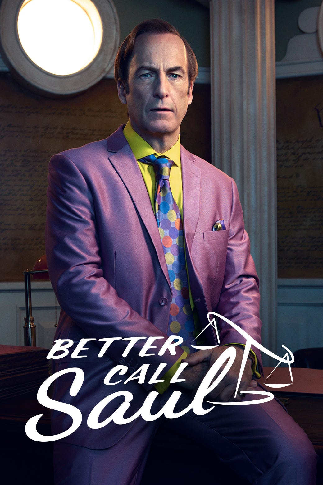
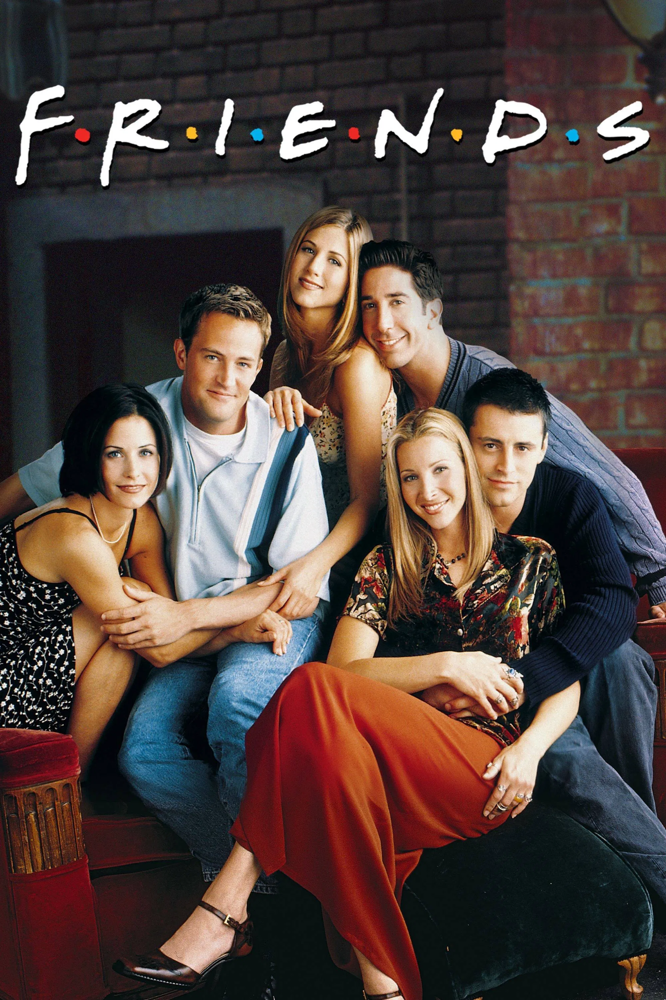
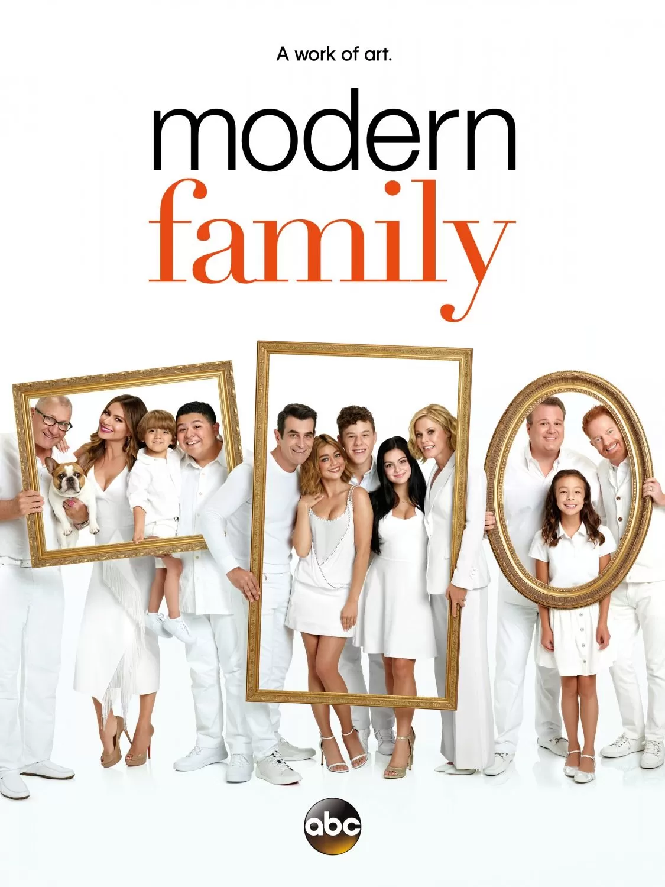

This list is not meant to be an objective ranking of greatness. It is simply a personal list of shows that have stayed with me for a long time, whether because of their atmosphere, their visual style, or the laughter they have given me.

The Office
The Office is without a doubt the series I have watched the most. I have seen it at least ten times, and it is still the one that makes me laugh the hardest. It is the show I return to when I am in a bad mood and need a pick-me-up, and it never fails to lift my spirits. The story follows a group of office workers at a small paper company and is filmed in a mockumentary style that makes it feel as if you are watching real people in their everyday lives. The humor is often awkward, cringe-worthy, and absurd, but it is also heartfelt and relatable. The characters are flawed but lovable, and the series captures the mundane yet meaningful moments of life with a unique blend of comedy and sincerity. At the same time, some of the humor and character portrayals have not aged well, and a few moments can feel uncomfortable or problematic from a modern perspective.

Better Call Saul
Better Call Saul is more elaborate and cinematic than the other shows on this list, and even than most television series in general. Every frame is carefully composed, every color feels deliberately chosen, and the show balances elegance, tension, and irony in a way that is instantly recognizable. It tells the story of how Jimmy McGill, a struggling small-time lawyer, gradually transforms into Saul Goodman, the morally flexible and flamboyant criminal lawyer who eventually becomes a key figure in the drug empire of Breaking Bad. Even though it is a prequel, I think it surpasses Breaking Bad in some ways, especially in its patience, character depth, and visual storytelling.

Friends
Friends is probably the most classic comfort show on this list. I know it is sometimes criticized for being too idealized or too tied to a particular era, but that is also part of why it feels so charming to me. The chemistry among the six main characters is what makes the series work so well, and even when the jokes themselves are simple, the timing and rhythm of their interactions make everything feel effortless. It presents a warm, familiar version of friendship and young adulthood that may not always be realistic, but is still very easy to sink into and enjoy.

Modern Family
Modern Family is one of the most consistently funny and lovable sitcoms I have ever seen. Like The Office, it uses a mockumentary format, but its tone is warmer and more centered on family relationships. What I enjoy most is how easily it can move from chaos and misunderstanding to something genuinely touching within a single episode. Each branch of the family has its own comic rhythm, so the show stays fresh over time, and beneath all the jokes there is a simple but sincere belief that family life is messy, ridiculous, and still deeply meaningful.

How I Met Your Mother
How I Met Your Mother feels a little different from the other sitcoms here because its structure is built around memory, storytelling, and the way people reshape the past when they tell it. That gives the series more room to play with time, fantasy, and recurring jokes in clever ways. I do not think every part of it works perfectly, especially near the end, but I still love its mixture of absurd humor and sentimental reflection. It captures a stage of life when friendship feels central, the future still feels open, and every night out seems like it might become a story you remember forever.
If I had to summarize this list in one sentence, it would be this: I am most drawn to shows that create a strong atmosphere and leave room for feeling, reflection, and memory.